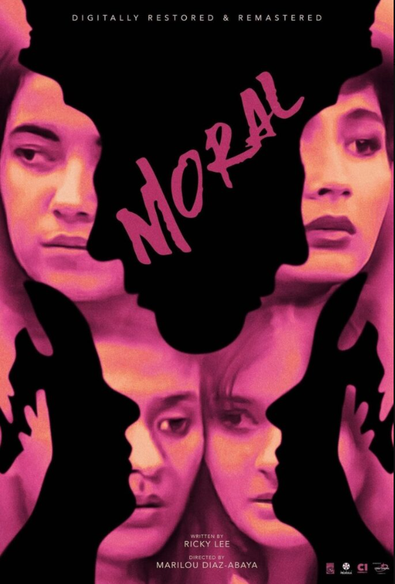
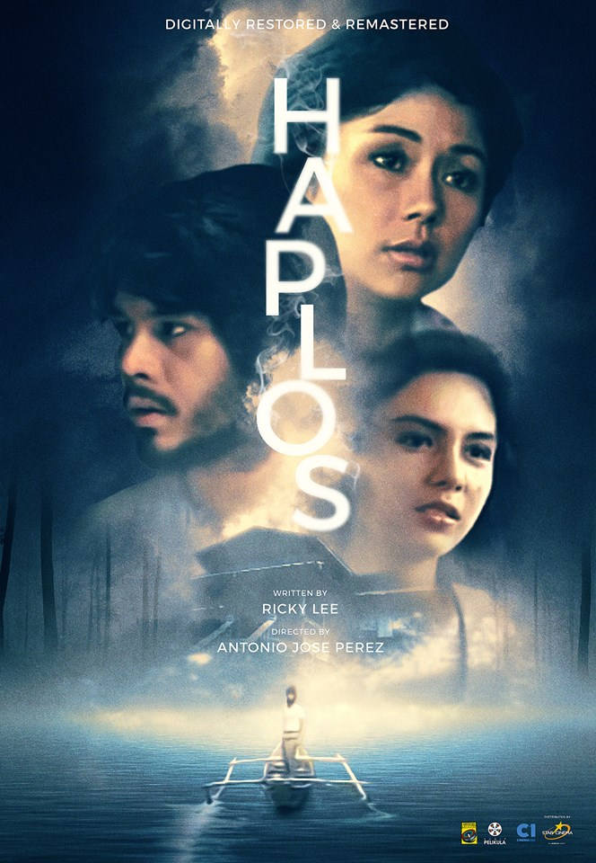

Moral (1982)
Moral follows four young women as they deal with different struggles involving love, family, relationships, and society. Their lives show the different expectations and pressures placed on women during that time.

Haplos (1982)
Para sa akin, interesting ang Haplos dahil hindi lang basta tungkol sa pag-ibig ang kwento. Makikita rin kung paano nagiging komplikado ang isang relasyon kapag may mga maling desisyon at matinding emosyon. Medyo madrama siya, pero bagay naman sa mga pelikula noong 1980s. May mga eksenang nakakainis, pero iyon din ang nagpaparamdam na parang totoong tao ang mga karakter.